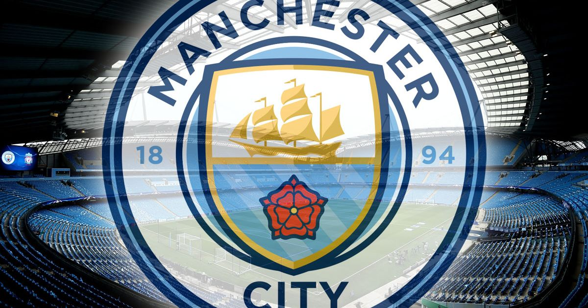

Манчестер Сі́ті» (англ. Manchester City Football Club) — англійський футбольний клуб з міста Манчестер. Клуб виступає в англійській Прем'єр-лізі. Після придбання клубу еміратськими інвесторами у 2008 році, він є одним з лідерів англійського футболу. Головним тренером «Манчестер Сіті» є Пеп Гвардіола призначений на цю посаду після закінчення сезону Прем'єр-ліги 2015/16 замість Мануеля Пеллегріні. Чинний капітан команди — Ілкай Гюндоган.
Полное название Manchester City Football Club Прозвища The Citizens (Горожане)[1] The Blues (Голубые)[2] Sky Blues (Небесно-голубые)[1] Основан 1880; 143 года назад (под названием «Сент Маркс (Уэст-Гортон)») 16 апреля 1894; 128 лет назад (под названием «Манчестер Сити») Стадион «Этихад», Манчестер Вместимость 53 400[3] Владелец City Football Group[4] Председатель Объединённые Арабские Эмираты Халдун Аль Мубарак Главный тренер Испания Пеп Гвардиола[5] Капитан Германия Илкай Гюндоган Рейтинг 2-е место в рейтинге УЕФА[6] Сайт mancity.com Соревнование Премьер-лига 2021/22 1-е
За свою историю клуб сменил три стадиона: с момента своего основания и до 1923 года играл на «Хайд Роуд», с 1923 по 2003 год — на «Мейн Роуд». В настоящее время выступает на построенном в 2002 году стадионе «Сити оф Манчестер» (спонсорское название — «Этихад») вместимостью около 55 тыс. зрителей.
